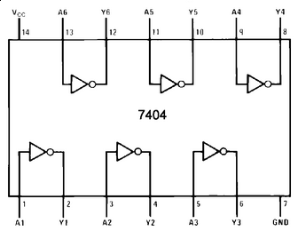
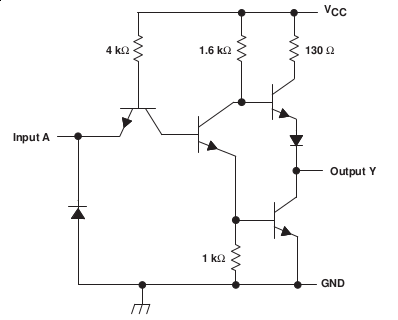

| Function |
NOT Gate |
| Number of gates in IC |
6 |
| Number of inputs/outputs |
1 input for each gate (total 6)
1 output for each gate (total 6) |
| Pinouts and Logic Diagram |

|
| TTL Schematic diagram for each gate |

|
Pin Description |
| Pin | Function | Typical Voltage |
| Vcc | Power supply (+ve) | +5 volt |
| GND | Reference ground | 0 volt |
Ai
(i=1,2,3,4,5,6) |
Inputs for ith NOT gate |
0 volt for logic 0
+5 volt for logic 1 |
Yi
(i=1,2,3,4,5,6) |
Output for ith OR gate |
0 volt for logic 0
+5 volt for logic 1 |
|
| Truth table |
| Input | Output |
| \(A_i\) | \(Y_i = \overline A_i \) |
| 0 | 1 |
| 1 | 0 |
|